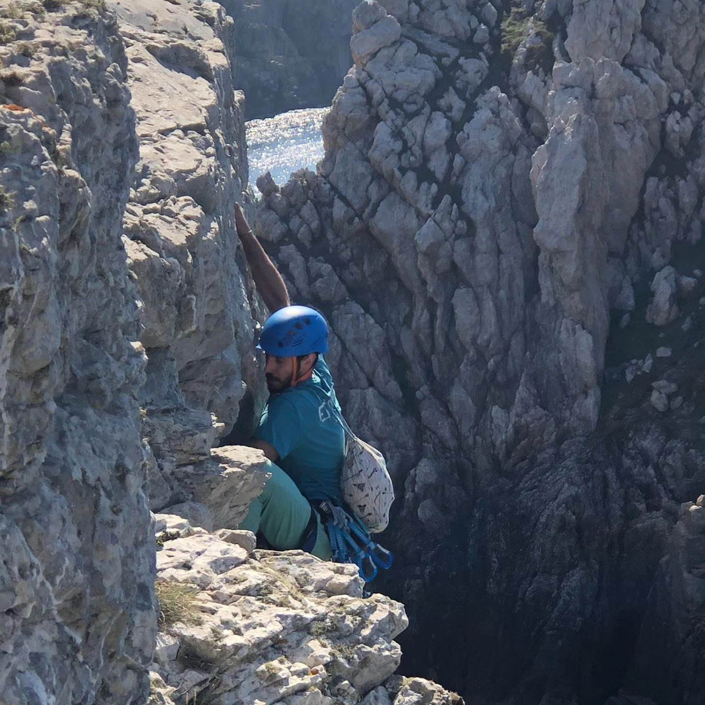

Mattia Morbello
Home
Research
Teaching
Community
Other
Close Menu
Mattia Morbello
Home
Research
Teaching
Community
Other
Activism and Support
Gender equality in Mathematics
Commission Parité de l'IRMAR
Égalité et sciences : la place des femmes - Édition 2024
Video Comité Parité de l'IF
Matheuses - Clémence Perronet
Ethic & Math Conference
CARE - Lyon - October 2025
Ecology and Science
Scientist Rebellion
[Work in Progress]
Interests
Climbing
Respect Bleau
Brocchi sui Blocchi
[Work in Progress]
